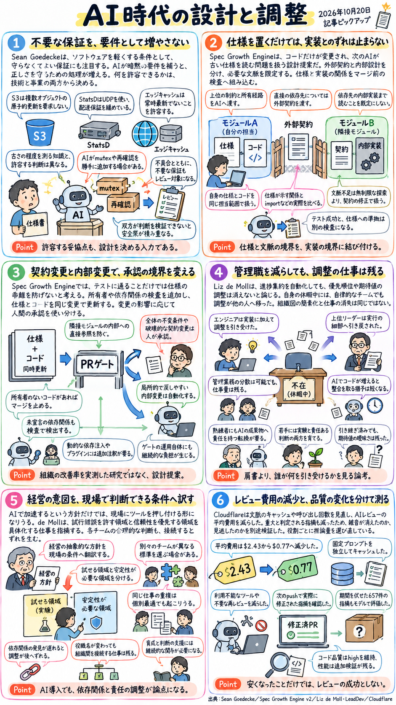

音声原稿
Aoi: みなさんこんにちは。10月20日の「AIが実装を速めるほど問われる、要件・仕様・調整・検証の境界」レポート解説です。
Ken: こんにちは。今回は4本の記事を順番に詳しく見ていきます。まず1本目は、2026年10月19日に公開されたショーン・ゴデッケ氏の記事「What requirements don't you have?」、日本語で言えば「守らなくてよい条件も設計の一部」というテーマです。
Aoi: 「満たすべき要件」ではなく「守らなくてよい条件」に着目するんですね。これはどういう問題意識から来ているんでしょうか。
Ken: ソフトウェアの構造を決めているのは、実は「何を実現しなければならないか」という要件だけではありません。「処理の遅さやデータの古さをどこまで許容できるか」という、いわば守らなくてよい条件も同様に構造を左右しているんです。ところが、AIを使ってコードを書くとき、この「守らなくてよい条件」が伝わっていないと、AIが仮想的な要件を勝手に補い続けてしまいます。その結果、正しさを守るための処理が過剰な複雑さを招いてしまう、というのがこの記事の出発点です。
Aoi: なるほど。でも、そもそも「条件を守らないことで設計が成り立つ」というのは、具体的にどういう仕組みなんですか？
Ken: 記事で挙げられている3つの具体例を見るとよくわかります。1つ目はクラウドストレージのAmazon S3です。複数のデータを書き換えるとき、すべてが同時に成功するか、あるいはすべて失敗して元に戻るかのどちらかしか許さない性質を「原子的更新」と呼びます。もしS3がこの複数オブジェクトの原子的更新を必須要件にしていたら、別々のストレージをまたいで状態を揃えるための大掛かりな調整処理が必要になってしまいます。S3はあえてこの原子的更新を要求しない、つまり条件から外すことで、ストレージをまたぐ調整を減らしているんです。
Aoi: あえて厳密な同時更新を保証しないことで、システム全体の調整を軽くしているんですね。
Ken: そうです。2つ目の例は、システムの数値データを集めるStatsDという仕組みです。通信の方法には、データが届いたかを確認して確実に届ける方式と、確認の手順を省いて一方的に送るUDPという方式があります。StatsDはこのUDPを使うことで、「データが必ず届くという配送保証」の条件を緩め、その代わりに処理の軽さや速さを得ています。そして3つ目の例がエッジキャッシュ、つまり利用者に近い場所にデータを一時保存する仕組みです。これも「常に最新のデータを返す」という条件を緩めて、一時的に古いデータが返ることを許容する代わりに、応答の速さを得ています。これらはすべて、どの条件を守らなくてよいかを決めることで成立している設計なんです。
Aoi: 確かに、どれも「正しさや確実性を少し緩める代わりに、軽さや速さを取る」という判断ですね。ただ、どこまで緩めていいかを決めるのは難しくないですか？
Ken: まさにそこが次の重要な論点です。ゴデッケ氏は、どの条件を緩められるかの判断には、技術と事業の双方の視点が欠かせないと説明しています。たとえばデータの古さで言えば、「この仕組みにすると、最大でどれくらい古いデータが返りうるか」を正確に把握するのは技術的な知見です。一方で、「その古さで利用者が困らないか、ビジネスとして許容できるか」を測るのは事業的な知見です。この2つはまったく別の専門性に属しています。
Aoi: エンジニアだけでも、プロダクトマネージャー、いわゆるPMだけでも決められないということですね。
Ken: その通りです。ここで組織の人間関係や構造が設計に直接影響してきます。もしエンジニアとPMが互いの判断を検証しにくく、しかもお互いの間に信頼が薄いとどうなるでしょうか。エンジニアは「後からデータがおかしいと責められたくないから、念のため常に最新にする処理を入れておこう」と考えますし、PMも「技術的なリスクがわからないから、絶対に不整合が起きないようにしてほしい」と求めます。つまり、双方が自分の身を守る安全策をとってしまい、条件を一切譲れなくなるんです。逆に、技術と事業の判断が1人の人間に集約されているような小規模な開発では、この両者の交渉を頭の中で短縮できるため、思い切って条件を緩められるという強みがあります。
Aoi: 組織の信頼関係や規模が、そのままコードの複雑さに跳ね返ってくるんですね。では、そこにAIが入ってくるとどうなるんでしょうか。
Ken: ゴデッケ氏自身の経験として語られているのが、AIは人間から指示されていない「一貫性」を守るためのコードを勝手につけ足すことがある、という現象です。たとえば、複数の処理が同時にデータへアクセスして内容が壊れるのを防ぐために、一方の処理を待たせる「ミューテックス」という排他制御の仕組みがあります。AIは、誰も求めていないのにこうしたミューテックスを入れたり、データが正しいかを何度も確かめる再確認処理をつけ足したりすることがあるんです。
Aoi: なぜAIはそんなことをしてしまうんでしょうか。
Ken: 人間側がAIに対して「間違えないこと」を繰り返し求めるからです。AIにバグを出さないよう厳しく指示し続けると、AIはあらゆる仮想的な失敗パターンを想定して防衛線を張ろうとします。その結果、本来なら小さな変更で済むはずのものが、大量の例外処理や確認処理へと膨れ上がってしまうのです。
Aoi: 良かれと思って「正しく書いて」と指示することが、不要な安全策の積み重ねを生んでしまうんですね。そうなると、人間がAIのコードを確認するレビューのやり方も変えないといけなくなりそうです。
Ken: はい。記事の結論として強調されているのは、コードレビューでは単なるバグや不具合を探すだけでなく、「そもそも不要な保証が紛れ込んでいないか」を探す必要があるということです。そしてAIに指示を出す段階でも、「このキャッシュは一時的に古くてもよい」といった具合に、こちらが許容する妥協点をあらかじめ明示して伝えることが、シンプルな設計を保つ鍵になると述べられています。
Aoi: 「何をするか」だけでなく「何を保証しなくていいか」を明文化してAIに渡す必要がある、というのがよくわかりました。続いて2本目の記事に移りましょう。
Ken: 2本目は、ハートウィグ・グラボウスキー氏によるarXivの論文「The Spec Growth Engine」です。初版の公開は2026年6月25日で、今回取り上げる第2版、バージョン2は2026年10月9日に更新されたものです。副題にある通り「仕様と実装のずれを、注意力ではなく検査対象にする」ための設計提案です。
Aoi: AIを使った開発では「まず仕様書をしっかり書いてからAIにコードを生成させよう」とよく言われますが、それだけではうまくいかないということでしょうか。
Ken: そこがこの論文の出発点です。グラボウスキー氏は、解決すべき課題を2つ挙げています。1つ目は、AIに正確なコードを書かせようとしてリポジトリ全体、つまりプロジェクトのコード全部を見せることで生じる「文脈の膨張」です。AIに渡す情報が多すぎて処理が重くなったり焦点がぼやけたりする問題ですね。2つ目は、最初に仕様を書いても、その後の開発で実装のコードだけが書き換えられてしまい、テストには通っているのに「仕様と実装の乖離」が進行していく問題です。
Aoi: テストに通っているなら問題なさそうにも見えますが、なぜ仕様と実装がずれると困るんですか？
Ken: 次に別のAIが作業するとき、そのAIは「古い約束」である書き換え前の仕様書を参照してしまうからです。仕様書をコード生成物の隣にファイルとして置いておくだけでは、人間の注意力に頼ることになるため、文脈の膨張も仕様と実装のずれも継続的には抑えられません。そこで提案されているのが「Spec Growth Engine」という仕組みです。
Aoi: そのSpec Growth Engineは、どうやって文脈の膨張と仕様のずれを同時に防ぐんでしょうか。
Ken: まず、プログラムの部品である各モジュールについて、「外部への契約」と「内部設計」を明確に分離します。外部への契約とは、他のモジュールに対して「こういう入力を受け取ってこういう結果を返す」と約束する外向けの仕様のことです。一方、内部設計はそのモジュールの中だけで完結する仕組みです。この分離をした上で、あるモジュールを担当するAIへ渡す文脈を厳密に制限します。
Aoi: AIには具体的に何を渡して、何を渡さないんですか？
Ken: 渡すのは、システム全体の上位の制約、そのファイルやモジュールの所有経路、直接利用する依存先モジュールの「外部への契約」、そして担当モジュール自身の仕様とコードだけです。ここで非常に重要なのは、直接の依存先であっても、その「内部実装」のコードまでは既定では読ませない、という点です。
Aoi: なるほど！隣のモジュールの中身がどう書かれているかは見せず、外向けの約束事だけを見せるんですね。それならAIに渡す情報量が爆発するのを防げます。でも、AIが作業中に「やっぱりこれだけでは情報が足りなくて実装できない」となったらどうするんでしょう。勝手に他のファイルを探しに行ったりしないんですか？
Ken: そこも厳格なルールがあります。もし必要な文脈が不足していても、AIがコードの探索範囲を無制限に広げることは許しません。文脈が足りないということは、依存先の「外部への契約」の書き方に抜け漏れがあるということです。ですから、探索範囲を広げるのではなく、「欠けている契約自体を修正する」という手順を踏ませます。
Aoi: 契約書の方を直してから作業を再開するわけですね。では、もう1つの課題だった「仕様と実装のずれ」はどうやって検査するんでしょうか。
Ken: 仕様書から導かれるモジュール間の関係と、実際のプログラムコードにあるimport文、つまり他の部品を読み込む記述などから抽出される「実際の関係」を機械的に比較します。そして、この検査をコードの変更を本番に合流させる「マージ」の条件、いわゆるゲートとして組み込みます。
Aoi: 具体的にどういう状態が見つかったらマージを止めるんですか？
Ken: 論文で挙げられているのは3つです。1つ目は、どの仕様にも紐づいていない「所有者のないコード」があること。2つ目は、仕様書には書かれていないのにコード側で勝手に他の部品を使っている「未宣言の依存」があること。3つ目は、隣のモジュールの外向けの契約を通さず、裏口から中身を直接覗き見するような「隣接モジュールの内部への直接参照」があることです。これらが検出されたらマージを止め、仕様とコードを必ず「同一の変更」の中で一緒に更新させます。これにより、コードだけが変わって仕様が置き去りになるのを防ぐわけです。
Aoi: 仕様の更新を忘れたら絶対にマージできない仕組みにしてしまうんですね。ただ、すべてを厳格に止めると開発が遅くなりそうですが、人間の確認と自動処理はどう使い分けるんでしょうか。
Ken: そこもリスクに応じて分けられています。システム全体の不変条件、つまり絶対に破ってはいけない大原則に関わる変更や、他のモジュールとの約束を壊すような「破壊的な契約変更」については、人間が承認します。一方で、モジュールの内部にとどまる局所的で、問題があればすぐに元に戻しやすい内部変更については、自動化して進める設計になっています。
Aoi: 外部に影響する契約の変更だけ人間がしっかり見るんですね。この仕組みを実際に使う上での条件や限界についても触れられていますか？
Ken: はい、2つの条件と限界が明記されています。まず技術的な条件として、プログラムの実行時に初めてどの部品を使うかが決まる「動的な依存注入」や、後から機能を追加する「プラグイン構造」を使っている場合、コードのimport文を見ているだけでは実際の依存関係がわかりません。そのため、こうした構造には人間やツールが追加の注釈をつける必要があります。また、マージを止めるゲートを運用すること自体の負担も生じます。なお、グラボウスキー氏自身が論文内で明確に断っている通り、この論文が提示しているのはあくまでアーキテクチャの設計と実装可能な検査方式の提案であり、実際に組織全体へ導入してどれくらい改善したかという改善率を測った実験結果ではありません。
Aoi: 実験データではなく、論理的な設計と検査の仕組みを提案した論文ということですね。では3本目の記事に進みましょう。
Ken: 3本目は、2026年10月19日にLeadDevで公開されたリズ・デ・モル氏の記事「Long live the engineering manager」、つまり「組織図を平らにしても依存関係は残る」という記事です。
Aoi: AIの普及やツールの進化で、進捗管理などを自動化してマネージャーを減らす、いわゆる「組織のフラット化」という話をよく耳にするようになりました。この記事はそれに対してどういう見方をしているんでしょうか。
Ken: デ・モル氏の主張は明確です。進捗の集約といった定型業務をどれだけ自動化しても、期待値の調整、優先順位づけ、人材の育成、そして部門間の翻訳といったマネジメントの本質的な業務は消えない、ということです。もし管理職という役職を廃止するなら、それらの仕事が消えるのではなく「誰へ移り、何を圧迫するのか」を見極める必要があると警鐘を鳴らしています。
Aoi: 管理職をなくしても仕事自体が蒸発するわけではない、と。そう言い切れる根拠として、何か具体的な事例が挙げられているんでしょうか。
Ken: デ・モル氏自身が育児休暇を取った際の実体験が挙げられています。彼女のチームは非常に自律的で、育休に入る前には十分な引き継ぎも行いました。つまり、マネージャーがいなくても自走できるはずの理想的な条件が整っていたんです。ところが実際に彼女が抜けてみると、徐々に周囲との期待値や業務の整合性が曖昧になっていきました。
Aoi: 自律的なチームで引き継ぎも万全だったのに、なぜそうなってしまったんでしょう。
Ken: もちろん、チームが完全に崩壊するような重大なトラブルは起きませんでした。しかし、マネージャーが担っていた調整の空白を埋めるために、現場のエンジニアたちは本来の開発から「調整業務」へと引き戻され、逆に彼女の上司にあたる上位のリーダーたちは、本来見るべき全体戦略から「実行の細部」へと引き戻されてしまったのです。
Aoi: なるほど。マネージャーを置かないと、結局エンジニアが調整に時間を取られ、上のリーダーが現場の細かい確認に追われて、それぞれの本来の仕事が圧迫されるんですね。
Ken: ええ。管理業務を複数のメンバーに分散させること自体は可能です。しかし、役職者の人数を減らすだけでは仕事量は減りません。それどころか、AIによってコード生成が速くなればなるほど、作ったものの間に生じる「不整合」を解消するための時間的猶予はむしろ短くなります。つまり、調整の重要性は減るどころか増しているんです。さらにデ・モル氏は、AI時代だからこそ継続的な「育成」と「翻訳」が必要になる理由を詳しく説明しています。
Aoi: AIがコードを書いてくれるようになると、育成の手間は減るようにも思えますが、何が課題になるんでしょうか。
Ken: ベテランの熟練者と若手の双方に、これまでとは違う難しさが生まれるからです。まず熟練したエンジニアには、「自分で手を動かしてコードを書くこと」に価値を見出す段階から、「AIが生成したものを含めた成果物全体に責任を持つこと」へと、意識の転換が求められます。一方、経験の浅い若手には、AIを使って気軽にいろいろ試してみる「実験」と、そのコードが本当に安全で妥当かを見極める「責任ある判断」との間でバランスを取ることが求められます。どちらも一朝一夕にできることではなく、マネージャーによる継続的な育成が必要な課題です。
Aoi: 確かに、AIを使うからこそ求められる判断力の育て方は新しい課題ですね。もう1つの「翻訳」というのはどういうことですか？
Ken: 経営陣の意図を現場の具体的な行動基準に噛み砕く作業のことです。たとえば経営陣が「AIで開発を加速するぞ」と号令をかけたとします。これをそのまま現場に下ろすと、エンジニアたちは「とにかくAIツールを使えという単なる押し付けだ」と受け取りかねません。そこでマネージャーが間に入り、「この機能は試行錯誤を許す領域だからAIでどんどん実験していい」「こちらの基盤システムは信頼性を最優先する領域だから、これまで通り厳密な検証を通す」といった具合に、経営の言葉を現場の文脈に合わせて具体化する「翻訳」が不可欠になるのです。
Aoi: どこでアクセルを踏んで、どこでブレーキを意識するかを具体的に翻訳するわけですね。
Ken: そして最後に、チーム間の「依存関係」の問題があります。記事では、互いに依存関係にある5つのチームが動くケースが示されています。もし5つのチームが、マネージャーによる横の連携なしに、それぞれのチーム内で「自分たちにとって最も合理的だ」と思う形で全社戦略を解釈して動いたらどうなるでしょうか。
Aoi: それぞれのチームは正しいと思って動いているわけですよね。それでも問題が起きるんですか？
Ken: はい。各自が合理的に動いていても、チーム間で技術やルールの「標準のずれ」が生じたり、同じような機能を別々に作ってしまう「重複」が起きたり、あるいは「実はあのチームのシステム変更が自分たちに影響する」という「依存関係の発見遅れ」が必ず生じます。デ・モル氏は、将来的に役職の名前が変わったり管理職の人数が変わったりすることはあっても、こうした組織と組織の間をつなぐ「接続」を担う仕事そのものは決してなくならず、残り続けると結論づけています。
Aoi: 1本目の記事でもエンジニアとPMの間の調整の話がありましたが、組織の中でもチーム間や階層間の翻訳・接続はAIでコードが速くなるほど重要になる、ということですね。では最後の4本目の記事をお願いします。
Ken: 4本目は、2026年10月19日にCloudflareのブログで公開されたライアン・スキッドモア氏の記事「Cutting our inference bill by 68% by being obsessive about optimization」です。副題の通り「費用削減とレビュー品質を別々に測る」取り組みを詳しく報告しています。
Aoi: AIの推論費用、つまりAIを動かすコストを68%削減したという非常に具体的な数字が出ていますね。これは何にAIを使っていたケースなんですか？
Ken: 人間が書いたコードの変更案に対してAIが自動でチェックを行う「AIコードレビュー」です。CloudflareはこのAIレビューの1回あたりの平均費用を、2.43ドルから0.77ドルへと68%削減しました。ただ、この記事が優れているのは「安くしました」で終わらず、コストを削った結果、レビューの質が落ちて重要な問題を見逃すようになっていないかを、まったく別の指標で厳密に検証している点です。
Aoi: まずはどうやって2.43ドルから0.77ドルまで費用を下げたのか、その仕組みから教えてください。AIモデルの単価が安いものに切り替えたんでしょうか。
Ken: いえ、記事が指摘しているのは、AIレビューの費用を膨らませているのはモデルの単価だけではなく、「毎回AIに送信する文脈の量」と「AIを呼び出す回数」だという点です。Cloudflareではもともと、一度送った指示文を再利用して計算代を浮かせる「プロンプトキャッシュ」という仕組みを使っており、そのキャッシュ命中率は97%に達していました。
Aoi: 97%もキャッシュが効いているなら、もう無駄はなさそうに思えますが、なぜ費用が膨らんでいたんですか？
Ken: まず単純に、やり取りで扱うトークン、つまり文字データの総数が増えれば、いくら割引が効いても支払額は増えます。さらに調査してみると、キャッシュの仕組みに落とし穴がありました。複数のリポジトリで共通して使う「共有プロンプト」の一番最後に、その時々の「作業ディレクトリ名」や「日付」といった毎回変わる文字が入っており、その直後にしかキャッシュの区切り、つまりキャッシュ境界が設定されていなかったのです。
Aoi: あっ、せっかく前半が共通の文章なのに、最後の1行に日付や場所の名前が入っているせいで、システムからは「毎回違う文章だ」と判定されて、別のリポジトリで再利用できなくなっていたんですね！
Ken: その通りです。そこで彼らは、毎回変わらない固定部分を独立させて確実にキャッシュが効くように切り分けました。さらに、無駄なデータ送信や呼び出しを徹底的に削りました。具体的には、その場面では利用不能なツールの定義データを送るのをやめ、コードに実質的な変更がない場合の再レビューを止め、AIがレビューコメントを投稿した後に惰性で続いていた不要なやり取りのターンを削減しました。また、エラー対策も見直しています。処理が時間切れになったケースと、AIプロバイダー側のシステム障害が起きたケースを明確に区別し、時間切れになった重い処理に対して、まったく同じ時間制限のまま無意味なやり直し、つまりリトライを繰り返すのも減らしました。
Aoi: キャッシュの境界直しから、不要なツール定義の削除、無駄な再実行の停止まで、本当に細かい通信の無駄を一つずつ潰していったんですね。それで費用が68%下がった後、レビューの品質にはどんな変化が起きたんでしょうか。
Ken: 最適化を行った後、AIが「重大である」と判定して出す指摘の数が減少したのです。ここでスキッドモア氏たちは立ち止まりました。重大な指摘が減ったのは、これまで出ていた的外れな「雑音」が減ってスッキリしたからなのか、それともコスト削減のせいで本当に危険なバグの「見逃し」が増えたからなのか。指摘件数の増減だけでは、この2つを区別できません。
Aoi: 確かに！指摘が減ったからといって「品質が落ちた」とも「精度が上がった」ともすぐには言えないですね。どうやってそれを見分けたんですか？
Ken: 2つの方法を組み合わせました。1つ目は、人間の実際の行動を基準にする方法です。AIが指摘した箇所が、開発者による次のコード更新、つまり「次のpush」で実際に書き換えられた割合を測りました。本当に役立つ指摘なら、人間がそれを見てコードを直すはずだからです。2つ目は、AIによる客観的なブラインド評価です。最適化の前後の期間であることを伏せた状態で、合計657件の指摘事項を集め、別のモデルにその指摘の妥当性を評価させました。
Aoi: 人間が実際に直したかという行動の事実と、いつのものか伏せた657件のモデル評価の2本立てでチェックしたんですね。その結果、何がわかったんでしょうか。
Ken: AIがどれくらい深く考えてから答えるかという「推論量」の設定によって、レビューの役割ごとに結果が分かれました。まず「コード品質レビュー」という役割では、推論量を中程度のmediumにするよりも、高い設定である「high」にした方が、開発者の実際の修正につながる有益な指摘を多く得られることがわかりました。そのため、コード品質レビューでは費用が多少かかっても推論量highを採用することに決めました。
Aoi: ただ安ければいいというわけではなく、実際にコードが直される効果を見てhighを選んだんですね。他の役割ではどうだったんですか？
Ken: 処理速度などの問題をチェックする「性能レビュー」という役割では、推論量をmediumに下げたところ、重要な指摘が減ってしまうという結果が出ました。そのため、性能レビューについては推論量highでの検証を課題として残しています。つまりこの記事の結論は、「指摘数が減ったから品質が悪化した」とか「費用が減ったから大成功だ」と短絡的に決めつけるのではなく、またすべてのレビューの役割を同じ設定に揃えるのでもなく、役割ごとに費用と成果の関係を別々に測り直すアプローチが必要だ、ということになります。
Aoi: 4本の記事をすべて見てきました。ここで全体のつながりを振り返ってみたいと思います。今回の4本は、AIがコードを書くスピードを上げれば上げるほど、その前後にある「人間の判断や仕組みの境界」が浮き彫りになるという点で深くつながっていますね。
Ken: はい。4本を並べてみると、ソフトウェア開発の入口から出口までの流れとして整理できます。まず入口の「要件」の段階では、1本目のゴデッケ氏の記事が示したように、AIに「間違えるな」とだけ言うと過剰な防衛コードが積み上がるため、人間側が技術と事業の視点をつないで「どこまで古さや遅さを許すか」という守らなくてよい条件を定義する必要がありました。
Aoi: そして要件が決まって「仕様と実装」の段階に入ると、2本目のグラボウスキー氏の論文につながりますね。
Ken: そうです。AIにリポジトリ全体を見せると文脈が膨張し、コードだけを直すと仕様書が古い約束になってしまう。だからこそ、モジュールの外向けの契約と内部設計を切り分け、AIに渡す文脈を制限しつつ、仕様とコードの実際の依存関係がずれていたらマージを止めるという機械的な検査の境界が必要になります。
Aoi: さらに、そうやって作られるソフトウェアを複数のチームで動かしていく「組織と調整」の段階が、3本目のデ・モル氏の記事でした。
Ken: ええ。AIで実装が速くなるほど、チーム間の不整合を直す時間的猶予は短くなります。マネージャーを減らしても、期待値の調整や経営意図の翻訳、若手と熟練者それぞれの育成、そして複数チーム間の接続という仕事自体は消えず、誰かが担わなければエンジニアや上位リーダーの本来の仕事を圧迫してしまいます。
Aoi: そして最後の「検証と運用コスト」の段階が、4本目のCloudflareの事例ですね。
Ken: はい。AIにレビューを任せる際も、共有プロンプトの末尾にある日付や作業ディレクトリのせいでキャッシュが効かなくなるような構造上の無駄を省きつつ、コストを下げた結果として本当に価値のある指摘が残っているかを、次のpushでの修正率や期間を伏せた評価によって、役割ごとに検証し直す必要がありました。AIが実装を速める時代だからこそ、要件の妥協点、仕様とコードの一致、組織間の翻訳と調整、そして費用対効果の検証という4つの境界を、人間がより自覚的に設計しなければならないと言えます。
Aoi: それぞれの現場で何が起き、どういう仕組みで対処しようとしているのかがよくわかりました。それでは、本日の解説はここまでです。みなさん、ありがとうございました。
Ken: ありがとうございました。
原稿 gemini-4-argon-contributor: 3,353 + 5,700 = 9,053 トークン / $0.1274（OpenCode Go 利用枠消費の概算（追加請求額ではありません））・再利用（再課金なし） / 音声 gemini-3.8-flash-lite-tts（Flex）: 入力 5,749 / 音声 42,176 トークン / $0.1280（list price 概算） / 合計 $0.2554
AIが実装を速めるほど問われる、要件・仕様・調整・検証の境界

対象期間：2026年9月20日〜10月20日／記事数：4本
ピックアップ
1. What requirements don't you have? — 守らなくてよい条件も設計の一部 S1
公開日：2026-10-19／原文言語：英語／著者・媒体：Sean Goedecke
概要
ソフトウェアの構造を決めるのは、満たすべき要件だけでなく、遅さやデータの古さをどこまで許容できるかという「守らなくてよい条件」である。AIが仮想的な要件を勝手に補い続けると、正しさを守るための処理が過剰な複雑さを招いてしまう。
要約
- S3は複数オブジェクトの原子的更新を要求しないことで、ストレージをまたぐ調整を減らしている。StatsDのUDP利用やエッジキャッシュも、配送保証や常時最新という条件を緩めることで軽さや速さを得ている。
- どの条件を緩められるかの判断には、技術と事業双方の視点が欠かせない。どれほど古いデータが返りうるかを把握する技術的知見と、その古さを利用者が許容できるかを測る事業的知見は、別の専門性に属する。
- エンジニアとPMが互いの判断を検証しにくく信頼が薄いと、双方が安全策をとって条件を譲れなくなる。一方、技術と事業の判断が一人に集約される小規模開発には、この交渉を短縮できる強みがある。
- Goedeckeの経験では、AIは指示されていない一貫性を守るためにmutexや再確認処理をつけ足すことがある。「間違えないこと」を繰り返し求めると、小さな変更が大量の例外処理へと膨れ上がる。
- レビューでは不具合だけでなく、そもそも不要な保証が紛れ込んでいないかを探す必要がある。キャッシュが一時的に古くてもよいと明示するなど、許容する妥協点を伝えることが設計を保つ鍵となる。
2. The Spec Growth Engine — 仕様と実装のずれを、注意力ではなく検査対象にする S4
初版公開：2026-06-25／対象版更新：2026-10-09 16:19:41 UTC（v2）／原文言語：英語／著者・媒体：Hartwig Grabowski / arXiv
概要
仕様を先に書いても、実装のコードだけが書き換えられれば、次のAIは古い約束（仕様）を参照してしまう。Spec Growth Engineは、モジュールの外部契約と内部設計を分離し、AIへ渡す文脈とマージ条件にその境界を組み込む設計提案である。
要約
- 解決すべき課題は、リポジトリ全体を見せることによる文脈の膨張と、テストに通っていても進行する仕様と実装の乖離である。仕様書を生成物の隣に置くだけでは、どちらも継続的には抑えられない。
- 外部への契約と内部設計を分け、担当モジュールへは上位の制約、所有経路、直接の依存先の契約、および自身の仕様とコードだけを渡す。依存先の内部実装まで読ませることは既定にしない。
- 仕様から導かれる関係と、コードのimportなどから抽出される実際の関係を比較する。所有者のないコード、未宣言の依存、隣接モジュールの内部への直接参照などがあればマージを止め、仕様とコードを同一の変更で更新させる。
- 全体の不変条件や破壊的な契約変更は人間が承認し、局所的で戻しやすい内部変更は自動化する。必要な文脈が不足していても探索範囲を無制限には広げず、欠けている契約自体を修正する。
- 動的な依存注入やプラグイン構造には追加の注釈が必要となり、ゲート運用の負担も生じる。なお、本稿が提示するのは設計と実装可能な検査方式であり、組織全体の改善率を測った実験結果ではない。
3. Long live the engineering manager — 組織図を平らにしても依存関係は残る S2
公開日：2026-10-19／原文言語：英語／著者・媒体：Liz de Moll / LeadDev
概要
進捗の集約を自動化しても、期待値の調整、優先順位づけ、育成、部門間の翻訳といった業務は消えない。管理職を廃止する際には、それらの仕事が誰へ移り、何を圧迫するのかを見極める必要がある。
要約
- de Mollは自身の育児休暇中、十分に引き継ぎを行った自律的なチームであっても、期待値や整合性が曖昧になった経験を挙げる。重大な崩壊こそ起きなかったものの、エンジニアは調整業務へ、上位のリーダーは実行の細部へと引き戻された。
- 管理業務を分散させること自体は可能だが、役職者を減らすだけでは仕事量は減らない。むしろコード生成が速くなるほど、不整合を解消するための時間的猶予は短くなる。
- 熟練者には「自分で書く」から「AIを含む成果物に責任を持つ」への意識転換が求められ、若手には実験と責任ある判断の均衡が求められる。いずれも継続的な育成を要する課題である。
- 経営陣の「AIで加速する」という意図は、現場では単なるツールの押し付けとして受け取られかねない。試行錯誤を許す領域と信頼性を優先する領域を具体化する「翻訳」が不可欠となる。
- 依存関係にある五つのチームが各自で合理的に戦略を解釈しても、標準のずれや重複、依存関係の発見遅れが生じる。役職名や管理職の人数は変わっても、こうした組織間の接続を担う仕事は残り続ける。
4. Cutting our inference bill by 68% — 費用削減とレビュー品質を別々に測る S3
公開日：2026-10-19／原文言語：英語／著者・媒体：Ryan Skidmore / Cloudflare
概要
AIレビューの費用は、モデル単価だけでなく、毎回送信する文脈の量と呼び出し回数によって膨らむ。Cloudflareは平均費用を2.43ドルから0.77ドルへ削減したが、節約後も重要な問題を発見できているかを別途検証し、レビューの役割に応じて推論量を変えた。
要約
- キャッシュ命中率が97%に達していても、扱うトークン総数が増えれば支払額は増える。共有プロンプトの末尾に作業ディレクトリや日付が入り、その直後にしかキャッシュ境界がないと、別リポジトリで共有部分を再利用できなかった。
- そこで固定部分を独立してキャッシュし、利用不能なツール定義、変更のない再レビュー、コメント投稿後の不要なターンを削減した。また、時間切れとプロバイダー障害を区別し、同じ時間制限での無意味なやり直しも減らした。
- 最適化後、重大と判定される指摘が減少した。これが「雑音の削減」か「見逃しの増加」かを区別するため、指摘箇所が次のpushで実際に変更された割合と、期間を伏せた657件の指摘に対するモデル評価を組み合わせて検証した。
- コード品質レビューでは、推論量highの方が実際の修正につながる指摘を多く得られたため、highを採用した。単に指摘数が減ったから品質悪化、費用が減ったから成功とは決めつけていない。
- 性能レビューはmediumで重要な指摘が減り、highでの検証を残す。すべての役割を同一設定に揃えるのではなく、役割ごとに費用と成果の関係を測り直すアプローチが結論となっている。
参考文献
S1 Sean Goedecke. “What requirements don't you have?” 2026-10-19.
S2 Liz de Moll. “Long live the engineering manager.” LeadDev, 2026-10-19.
S3 Ryan Skidmore. “Cutting our inference bill by 68% by being obsessive about optimization.” Cloudflare, 2026-10-19.
S4 Hartwig Grabowski. “The Spec Growth Engine: Spec-Anchored, Code-Coupled, Drift-Enforced Architecture for AI-Assisted Software Development.” arXiv:2606.27045v2, 2026-10-09. PDF表紙の日付は10月12日、公開版の更新日時はarXiv履歴に従った。
作成情報
本文下書き：dot。Mac日本語推敲の実施結果と使用量は工程別の記録を参照。本文生成のモデル・レポート別トークン・費用は、権威ある計測ソースを取得できず不明。後処理の使用量とは区別する。
| 工程 | モデル | トークン | コスト |
|---|---|---|---|
| 本文生成 | 未取得 | 未取得 | 算出不可・計測不能: Dots cloud authoring has no authoritative report-scoped model, input, output, cache-token or billing measurement source; publishing-session usage is excluded. |
| 推敲 | gemini-4-argon-contributor | 入力 2,264 + 出力 2,394 = 4,658 | $0.0569（OpenCode Go 利用枠消費の概算（追加請求額ではありません）） |
| 音声解説 | gemini-4-argon-contributor＋gemini-3.8-flash-lite-tts | 原稿 9,053 + 音声 47,925 = 56,978 | $0.2554（原稿 OpenCode Go 利用枠消費の概算（追加請求額ではありません）・音声 Flex list price 概算）・再利用（再課金なし） API価格換算。実請求額・月額契約料とは別。本文・画像・対応マッピングは別工程。 |
| 画像生成 | 未取得 | 未取得 | 算出不可・実モデル・品質・画像usage未取得。画像寸法から単価を推測しない。 |
| 算出済み部分合計 | 61,636 | 約 $0.3123（算出可能な分の合計） |